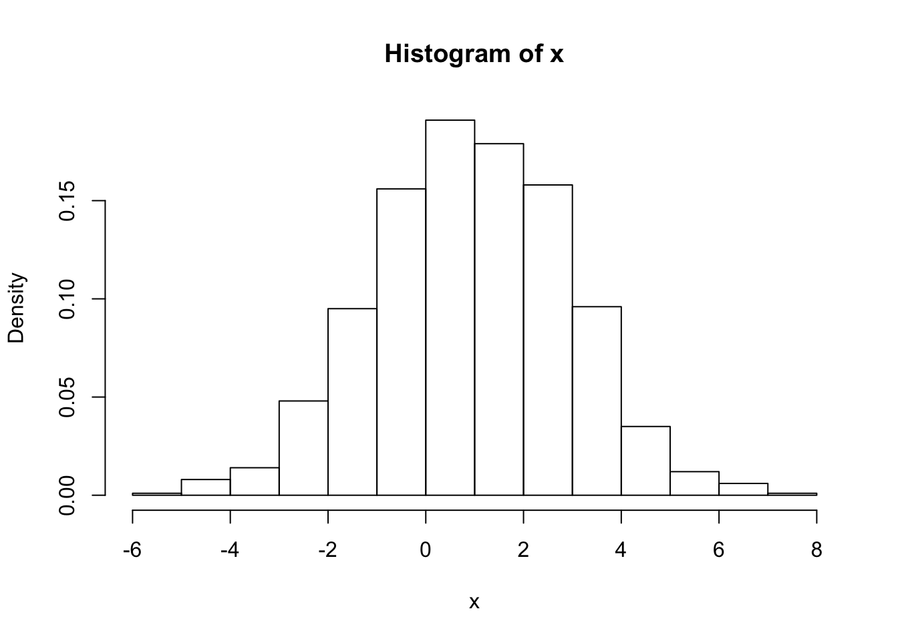

Chapter 6 Statistical functions
6.1 Sums and frequencies
The simple sum is given by sum(x) and the cumulative sum is calculated with cumsum.
6.2 Frequencies
Frequency counts (absolute and relative) can be made using the functions
#Frequencies- one-dimensional
table(x)
x
table(x)/n
klassen=hist(x,breaks=(c(0,2,5,10)))
klassen$counts
klassen$counts/ntable() can also be used for analyzing multi-dimensional frequencies.%kann auch zur Analyse von mehrdimensionalen Häufigkeiten verwendet werden.
x=c(1,1,1,2,1,3,3,2,1,3)
y=c(0,0,0,1,0,0,1,1,0,1)
z=c("a","b","b","a","b","b","a","b","a","a")
data.frame(x,y,z)
table(x,y)
table(x,y,z)## generates two-dimensional tables for x and y, seperated for values of z. %erzeugt zweidimensional K.tabelle fuer x und y
%##getrennt nach Auspraegungen von zprop.table() generates tables with the conditional distribution in the collumns/rows. %erstellt Kontingenztabellen mit den bedingten Verteilungen in den Spalten bzw. Zeilen.
6.3 Statistical Distributions
In the context of statistical distributions of discrete or continuous random variables, four types of calculations/procedures are of particular interest, namely
- the calculation of values of the probability function or density function,
- the calculation of probabilities for certain events,
- the calculation of quantiles,
- Simulation, i.e. Drawing random numbers from a given distribution.
In principle, the command syntax in R is uniformly regulated, i.e. they are similar for all distributions.
6.3.1 Normal distribution
The commands for the above calculation types and simulation for the normal distribution are
Where the “d” is the density and calculates values of the density function at a specified location, the “p” for probability and calculates the distribution function, and “q” for quantile and calculates values of the quantile function. “r” stands for random and draws random numbers from the normal distribution.
\(\mathcal{N}(1,4)\)
Due to the symmetry of the normal distribution, the value of the distribution function at the expected value is always 0.5:
## [1] 0.5## [1] 0.3085375## [1] 0.5How to calculate the probability for the interval \([2,3]\) for a \(\mathcal{N}(1,4)\)- distributed random variable X, i.e. the probability \(P(2\leq X \leq 3 )\)?
## [1] 0.1498823What is the 0.6 quantile of the \(\mathcal{N}(1,4)\) distribution?
## [1] 1.506694What are the 0.25, 0.5, and 0.75 quantiles of the standard normal distribution?
Suppose we want to draw 1000 random numbers from \(\mathcal{N}(1,4)\) and visualize the resulting density in a histogram:

6.3.2 Binomial distribution
The basic commands are
Let \(X\) be binomial distributed with \(N = 10\) and \(\pi = 0.5\). We know this just corresponds to throwing a fair coin 10 times. The random variable X specifies the number of “head” (“number”) in 10 throws.
What is the probability for “exactly 8 times head”, i.e. \(P(X=8)\)?
## [1] 0.04394531What is the probability for \(P(2<X\leq 6)\)?
## [1] 0.828125In this case we have to differentiate between \(<\) und \(\leq\). Why? What are the 0.25- ,0.5- and the 0.75-quantiles of the \(\mathcal{B}(10,0.5)\)-distribution?
## [1] 4 5 6How can we simulate a 20-time coin toss?
## [1] 0 1 0 0 0 0 0 1 1 1 1 1 0 1 0 1 0 1 1 1This corresponds to the 20-fold repetition of a Bernoulli experiment, i.e. the 20-time draw from a \(\mathcal{B}(1.0.5)\) distribution. The number of zeros/ones is then \(\mathcal{B}(20,0.5)\)-distributed. The probability function of this distribution can be represented over
In R, there are similar commands for many other distributions, e.g. dgamma(), dexp(), dpois(), dunif() etc.
6.4 Multiplication of a random variable with a constant
For a random variable X with \(\mathbb{E}[X] <\infty\) and \(\mathbb{E}[X^2] <\infty\), the mean value, and the variance exist, all \(c \in \mathbb{R}: \mathbb{E}[c\cdot X]=c \cdot \mathbb{E}[X]\) \(Var[c\cdot X]=c^2\cdot Var[X]\).
Usually the “random generator” of R for each given sample draws new numbers, that is, usually the results are slightly different in the repetition of a draw.
## [1] 7 6 1 3 5 4 6 4 3 5 7 5 5 3 4 4 7 4 2 2## [1] 10 6 6 6 5 2 5 6 3 7 4 2 5 5 3 6 6 6 6 7## [1] 4 5 6 4 8 7 2 5 7 7 5 7 5 6 5 3 6 4 3 3With the command set.seed () the “location” at which the random generator starts to simulate can be manipulated so that a particular sample can be replicated.
set.seed(32323)
rbinom(20,10,0.5)
set.seed(32323)
rbinom(20,10,0.5)
set.seed(32323)
rbinom(20,10,0.5)But: this is different than: